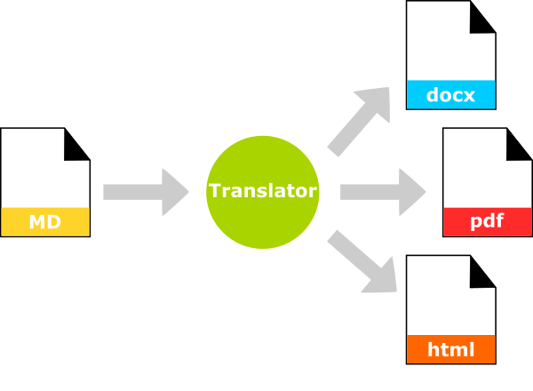

6.1 How Markdown Works
Markdown is a two step process. You write, with markup, in a plain text file. Another application then formats your document based on your markup.

This makes markdown very useful for producing many different types of documents from the same piece of prose, whether that be pdf, html, docx you name it. It also means that you have one working, editable document, which is plain text, and a series of distributable copies in other formats. More importantly, formatted in a way to address the needs of that particular audience.
All of the content that you're reading right now was authored in Markdown. Note at the top of the page, you can download this content as a pdf or as an epub. But we only had to write it once.